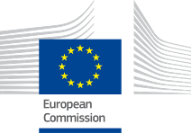
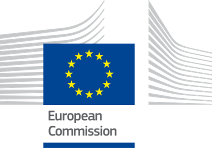
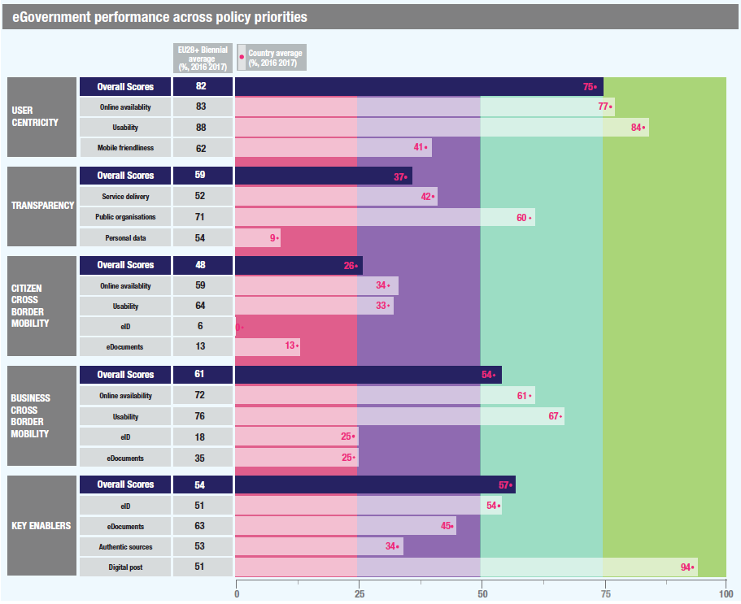

ISA2
Table of Contents


Digital Government Factsheet 2019
Slovakia
ISA2
Country Profile 3
Digital Government Highlights 6
Digital Government Political Communications 7
Digital Government Legislation 11
Digital Government Governance 16
Digital Government Infrastructure 21
Digital Government Services for Citizens 24
Digital Government Services for Businesses 31
Country Profile
Basic data
Population: 5 443 120 inhabitants (2018)
GDP at market prices: 90 201 million Euros (2018)
GDP per inhabitant in PPS (Purchasing Power Standard EU 28=100): 76 (2017)
GDP growth rate: 4.1% (2018)
Inflation rate: 2.5% (2018)
Unemployment rate: 6.6% (2018)
General government gross debt (Percentage of GDP): 50.9% (2017)
General government deficit/surplus (Percentage of GDP): -0.8% (2017)
Area: 49 036 km²
Capital city: Bratislava
Official EU language: Slovak
Currency: Euro (EUR)
Source: Eurostat (last update: 15 March 2019)
Digital Government Indicators
The following graphs present data for the latest Digital Government Indicators for Slovakia compared to the EU average. Statistical indicators in this section reflect those of Eurostat at the time the factsheet is being prepared.
Digital Government State of Play
The graph below is the result of the latest eGovernment Benchmark report, which monitors the development of eGovernment in Europe, based on specific indicators. These indicators are clustered within four main top-level benchmarks:
- User Centricity – indicates to what extent (information about) a service is provided online and how this is perceived.
- Transparency – indicates to what extent governments are transparent regarding: i) their own responsibilities and performance, ii) the process of service delivery and iii) personal data involved.
- Cross-Border Mobility – indicates to what extent EU citizens and businesses can use online services in another country.
- Key Enablers – indicates the extent to which five technical pre-conditions are available online. There are: Identification (eID), Electronic documents (eDocuments), Authoritative Sources, and Digital Post. Digital Post refers to the possibility that governments communicate electronically-only with citizens or entrepreneurs through e.g. personal mailboxes or other digital mail solutions.
These top-level benchmarks are measured using a life-events (e.g. mystery shopping) approach. Eight life events are included in the overall eGovernment performance score. Four of these life events were measured in 2013, 2015 and 2017 and the other four were measured in 2012, 2014, 2016, and again in 2018. The life events measured in 2017 were Regular business operations, Moving, Owning and driving a car and Starting a small claims procedure. The life events measured in 2018 are Business start-up, Losing and finding a job, Family life and Studying.
Source: eGovernment Benchmark Report 2018 Country Factsheets
Digital Government Highlights
Digital Government Political Communications
Slovakia launched a Digital Transformation Strategy 2019-2022. Its Action Plan provided an official strategy to define specific policies and priorities with regard to the ongoing digital transformation of the economy and society.
Digital Government Legislation
- The Information Systems in Public Sector Act No.95/2019 came into force in May 2019. The Act legislated for a commitment by the State provides high quality electronic services, since it was responsible for regulating the complete lifecycle of IT governance within the public sector and established responsibilities and guidelines for all IT bodies involved within public sector electronic services.
- Act No. 177/2018 on certain measures to reduce the administrative burden through the use of public administration information systems and on amendments, was adopted on 15 March 2018, by the National Council of the Slovak Republic.
Digital Government Governance
There were no changes regarding digital government governance in the reporting year.
Digital Government Infrastructure
- Slovakia implemented a portal, oversi.sk, that allowed for the verification and exchange of four types of documents between government authorities.
- In 2018, Financial Administrator SR introduced a new project to facilitate the online connection of all cashiers to the eKasa financial management portal. It was part of a range of measures to combat tax fraud. From 1 May 2019, all new facilities and new cash registers were required to be connected to the system.
Digital Government Services for Citizens and Businesses
The digital service OVER SI started in September 2018. Based on the Central Data Integrated Platform, it was set up in response to the Government´s Stop to Bureaucracy initiative. In due course, more than 16 000 public administration clerks performing duties at different domains were registered in order to provide themselves with the requested evidence (in the first phase evidence came from business registers (companies, self-employed), from cadastre and from criminal register). By the end of 2019, another batch of 11 sources of evidence was expected to be made available via the OVER SI.
Digital Government Political Communications
Specific political communications on digital government
Strategy of Digital Transformation of the Slovak Republic 2019-2022
The Strategy of Digital Transformation of the Slovak Republic framed governmental strategy in a way that defined national policies and particular priorities with regard to the ongoing digital transformation of economy and society.
The Strategy followed up on the priorities of the EU Digital Single Market. At the national level, it accelerated ongoing processes in terms of building the digital market and carrying out various measures that arose from the most recent cross-sectoral policies of the EU. The Strategy also reflects on the strategic materials and recommendations of international organisations (EU, OECD, UN, G7 and G20) that consider digital transformation to be the key to inclusive and sustainable growth. The Strategy puts emphasis on new digital technologies such as artificial intelligence, Internet of Things, 5G technology, big data and analytical processing of data, blockchain or high-performance computers, which will eventually become a new engine of economic growth and competitiveness.
The Action Plan of Digital Transformation 2019-2022, which summarised short-term priorities and measures, was developed to follow the Strategy. Its specific measures were divided into three subject areas:
- Improvement of education with a focus on digital skills and employment for the modern era;
- Strengthening of pillars for a modern digital economy; and
- Ability of the public sector to use innovations and data.
The vision of digital transformation, however, is more complex, covering the economy, society, public services, rural development, science and research.
National Concept of eGovernment 2015 - 2020
The National Concept of eGovernment, approved by the Slovak government in September 2016, defined the strategic Enterprise Architecture of eGovernment and its central coordination, and also the principles and objectives of further development in accordance with goals stated in the Strategic Document for Digital Growth and Next Generation Access Infrastructure. This document represented a new philosophy of viewing informatisation with an emphasis on the process openness, fair competition, and increase of the value of IT in key functions of public administration, whether in a form of the improved services, better decisions thanks to data, better regulation, or more efficient operation. The concept was built around a vision of an innovative and open state that provides the citizens and businesses with user-friendly and easy-to-use services, but at the same time operated in a complex way so that it could respond swiftly and effectively to the challenges of the dynamic modern era.
Informatisation priorities covering a wide range of areas needed to be addressed. The priority of process optimisation and automation of the public administration performance, along with the priority of orchestration of services to the life situations, ensured a qualitative change not only in the provision of the public administration services to the public, but also in the operation of public administration itself. Equally important were priorities referring to improved access for citizens, businesses and officials to the e-Government environment, the use of the common central blocks, management of data, Open Data, Government Cloud, and security. This document also included a proposal to prioritise development programmes and projects that helped implement the strategic architecture of public administration, reference architecture of specific solutions, and segment architecture. These aspects created conditions for the efficient process of public administration informatisation. They managed and controlled access by the Slovak Government to any changes in the process, as well as preconditions for offering effective responses to a wide range of existing and potential economic, security or other threats.
Operational Programme Integrated Infrastructure 2014-2020
The Operational Programme Integrated Infrastructure (OPII) was a strategic document developed for the absorption of EU funds in the transport sector and in the area of enhancing access to, and use and quality of, information technologies. The overall focus of OPII, its specific objectives, and activities were set to ensure promotion of the fulfilment of the priorities of the Europe 2020 Strategy and National Reform Programme of Slovak Republic.
The overall objective of OPII was to support sustainable mobility, economic growth, job creation and to improve the business climate through the development of transport infrastructure, public transport and information society.
The Deputy Prime Minister’s Office for Investments and Informatisation of the Slovak Republic was responsible for the area of information society within the Operational Programme Integrated Infrastructure. Other objectives of the operational programme were managed by the Ministry of Transport, Construction and Regional Development to support sustainable mobility, economic growth, job creation and improving the business environment through the development of transport infrastructure.
In the framework of the Operational Programme, the Deputy Prime Minister’s Office for Investments and Informatisation of the Slovak Republic acted as an intermediary body responsible for Priority Axis 7 Information Society. The funds were invested in the development of electronic services for citizens and businesses, arranging complex life events, cross-border interoperability and increasing the availability of government data through open data. At the same time, public administration reform was supported through ICT, including the further expansion of the government cloud. Finally, the allocation for priority axis 7 should ensure coverage with broadband internet of all households with minimum speed of 30 mbps.
Strategic Document for Digital Growth and Next Generation Access Infrastructure (2014–2020)
The Strategic Document for Digital Growth and Next Generation Access Infrastructure (2014-2020) defined a strategy for the development of digital services and next generation access infrastructure in Slovakia. It also focuses on the fulfilment of the ex-ante conditionalities by means of which the EU evaluated the readiness of Member States to implement investment priorities of their choice. The document particularly discussed the fulfilment of the two ex-ante conditionalities defined under thematic objective 2, “Enhancing access to and use and quality of information and communication technologies”.
The Strategic document set out a strategy for the further development of digital infrastructure services and next generation networks in Slovakia for the 2014 - 2020 period. It also fulfilled the objectives set out in the Position Paper of the European Commission and implements measures in the Digital Agenda for Europe, building on the activities implemented under the Operational Programme Information Society from 2007 – 2013.
The vision of further eGovernment development in Slovakia until 2020, includes actions to move towards a functioning information society and building of Smart Government. Information technologies will become inherent in people’s everyday life and an essential driver of Slovakia’s competitiveness.
The following eGovernment investment priorities were emphasised in the 2014-2020 period:
- Services for citizens and businesses;
- Effective public administration;
- Broadband/Next Generation Network.
The document served as a ground for the preparation of The Operational Programme Integrated Infrastructure (Priority Axis Information Society) for the 2014 - 2020 period.
The document was acknowledged by the Government of the Slovak Republic on 8 January 2014.
Key enablers
Access to public information
No political communication was adopted in this field to date.
eID and Trust Services
No political communication was adopted in this field to date.
Security aspects related to digital government
Cyber Security Concept of the Slovak Republic for 2015 – 2020
The Cyber Security Concept of the Slovak Republic for 2015 – 2020 was adopted in 2015. The National Security Authority of the Slovak Republic is a government body responsible for the implementation of the strategy. The strategic goal of cyber security in the Slovak Republic is to achieve an open, secure, and protected national cyber space especially by building trust in the reliability and security of, above all, critical information and communication infrastructure, as well as building certainty that this will perform its functions and serve national interests also in cases of cyber-attacks. The implementation of the Concept was coordinated by the Action Plan for the Implementation of the Cyber Security Concept of the Slovak Republic for 2015-2020 by defining tasks, responsible and cooperating parties in charge of its completion. The Action Plan was established in March 2016.
The main strategic pillars of the Concept are:
- Building an institutional framework for cyber security administration;
- Creating and adopting a legal framework for securing the administration of cyber space;
- Supporting, preparing, and introducing a system of education in the area of cybersecurity.
Interconnection of base registries
No political communication was adopted in this field to date.
eProcurement
No political communication was adopted in this field to date.
Domain-specific political communications
The Proposal for the Centralisation and Development of Data Centres in the State Administration
On 21 May 2014, the Government of Slovak Republic approved a strategy whose main goal was to centralise the number of data centres of the state into just two facilities under the scope of the Ministry of Finance and the Ministry of Interior. They were serviced cloud services such as IaaS, PaaS, SaaS, and benefited from high levels of quality and safety in the form of catalogue services.
The intention of the supra-ministerial provision of cloud services addressed primary requirements for decreasing the costs of public administration by:
- Unifying the environment for operation of information systems;
- Providing eGovernment services;
- Optimising the use of resources;
- Decreasing procurement and operating costs;
- Increasing the efficiency of management at all levels, from operation of infrastructure to management of relationships, including methodological support;
- The focus of organisations only on their key processes and activities (excluding IT);
- Simplifying and unifying processes across organisations.
Interoperability
No political communication was adopted in this field to date.
Emerging technologies
No political communication was adopted in this field to date.
Digital Government Legislation
Specific legislation on digital government
Information Systems in Public Sector Act No. 95/2019
The Information Systems in Public Sector Act No. 95/2019 C.l.a. came into force on 1 May 2019. It was designed to assist citizen’s and business owners obtain higher quality stat-provided electronic services. This legislation regulated the complete lifecycle of IT governance within the public sector and established responsibilities for the bodies involved in IT governance within public sector electronic services. This Act had an indirect impact on citizens and business owners. From the perspective of the State, the Act offered the potential for cost-cutting within the public sector by setting out more beneficial licence policies in the area of supplying unique software solutions.
Amendment No. 238/2017 to the Act No. 305/2013 of Coll. on the eGovernment
Progress in eGovernment was assisted by Amendment No. 238/2017 to the Act No. 305/2013, which introduced the concept of central delivery of official documents, online payments for electronic services and simplified authorisation of electronic documents. In general, the main goal of Slovakia’s eGovernment strategy was to progress in the mandatory use of electronic forms, which were expected to ensure greater interoperability between information systems, more efficient use of data and more transparent performance of online public administration.
An amendment to eGovernment Act was accepted by the Government in April 2019, establishing direct benefits to citizens and business owners. In particular, it made it possible to create an electronic mailbox for a minor older than 15. It made it possible for banks, telecommunication companies and postal entities to cross-reference or verify client details against records held within the registries of ID cards and physical persons, after an agreement with the Ministry of Interior, and after having provided the details of the person’s eID. This proposal was based on the premise of making the provision of electronic services faster, not only for citizens but also for the business community.
Amendment No. 272/2016 to the Act No. 305/2013 of Coll. on the eGovernment
On 20 September 2016, the National Council approved an amendment to the Act on eGovernment that was subsequently published in the national Collection of Laws under No. 272/2016. The aim of the amendment to the Act on eGovernment was to harmonise existing procedures in the areas of identification and authentication with reflect to Regulation No. 910/2014 of the European Parliament, and of the Council of 23 July 2014, on electronic identification and trust services for electronic transactions in the internal market and repealing Directive 1999/93/EC. Minor changes to electronic communications with public administration bodies were also introduced by the following Amendment No. 374/2016 to the Act No. 305/2013 of Coll approved by the National Council on 7 December 2016. The full text of these amendments was made available in Slovak language on the newly established Legislative and Information Portal ‘Slov-Lex’, which provided public access to applicable laws in electronic form.
Act No. 305/2013 of Coll. on the eGovernment.
The Parliament adopted Act No. 305/2013, Coll. Civil Code on the Government, laying out basic principles upon which a future electronic public administration will operate. The Act did not replace the traditional 'paper' from the official agenda, but it will create a comprehensive electronic alternative. The Act also described a number of key elements, such as pursuance by proxy, basic registries, eDesk modules document conversion, electronic payment of fees, and authentication of persons in public administration information systems, eDelivery, eForms module, electronic personal mailbox, the administration and operation of a central portal for public administration and Integrated Service Points (ISPs) for assisted public administration eServices. Furthermore, it also laid a foundation of a common data layer by defining a Module of the intergovernmental communication. This module implemented the rules and processes for the data exchange among IT systems from different segments as well as applies the concepts of the Master Data Management.
Act No. 275/2006 of Coll. on Public Administration Information Systems
This Act provided a framework for eGovernment when it regulated:
- The rights and obligations of responsible persons in the area of design, operation, use and development of public administration information systems;
- Basic conditions to ensure integrity and security of public administration information systems;
- The administration and operation of a central portal for public administration;
- The issuing of data depreciation from public administration information systems and the output from public administration information systems;
- Integrated Service Points (ISPs) for assisted public administration eServices;
- Administrative proceedings and penalties for unlawful activity.
Decree No. 55/2014 on Standards for Information Systems of Public Administration
The decree on standards for information systems of public administration No. 55/2014 of Coll. came into force on 15 March 2014. This decree laid down specific standards for information public administration systems: technical standards related to technical equipment, network infrastructure and software resources; standards of accessibility and functionality of websites relating to the application software by law; standard terminology for electronic services, related to the network infrastructure, and standards for electronic government services, related to data registers, code and application software.
Decree No. 478/2010 on Basic Code List of Public Administration Sections and Public Administration Agendas
Decree No. 478/2010 of Coll. came into force on 1 January 2011. The basic register was managed by the Central Meta-Information System of Public Administration (MetaIS).
Key enablers
Access to public information
Act No. 211/2000 on Free Access to Public Information
The Act on Free Access to Information, which came into force on 1 January 2001, defined the term 'public information' and established a general principle of free and unlimited access. Under the Act, any person or organisation could request information held by state agencies, municipalities and private organisations that make public decisions. The body had to respond no later than 10 days after receipt of the request and to keep a registry of requests. Costs were limited to reproduction and could be waived. There were a number of exemptions (e.g. for information classified as a state or professional secret, personal information, trade secrets, etc.), which could be withheld. Appeals were made to higher agencies and could be reviewed by a court.
Re-Use of Public Sector Information (PSI)
Slovakia notified the full transposition of Directive 2003/98/EC of the European Parliament and of the Council of 17 November 2003, on the re-use of public sector information (PSI Directive). This legislation was implemented by Act No. 211/2000 of Coll. on Free Access to Public Information.
eID and Trust Services
eSignatures
Act No. 215/2002 on Electronic Signatures was repealed by Act No. 272/2016 on trust services for electronic transactions in the internal market based on Regulation No. 910/2014 of the European Parliament and of the Council of 23 July 2014 on electronic identification and trust services for electronic transactions in the internal market. It regulated relations arising in connection to the creation and use of electronic signatures and electronic seals, the rights and obligations of persons and legal persons when using electronic signatures and electronic seals and the reliability and protection of electronic documents signed by electronic signatures or provided by electronic seals.
Security aspects related to digital government
Cyber Security Act
In March 2018, the Act on Cybersecurity in the Collection of Laws was published as No. 69/2018. This legislation was the first legal norm governing cybersecurity within the Slovak Republic. It came into force on 1 April 2018.
The Act established minimum security and notification requirements with the aim of providing cybersecurity. It regulated:
- Jurisdiction of public administration bodies in the area of cybersecurity,
- National strategy on cybersecurity,
- Cybersecurity Single Information System,
- Status and obligations of the operator of essential services and digital service provider,
- Organisation and competencies of CIRT units,
- Education and awareness building,
- Inspection mechanisms and sanctions.
The new Act transposed the EU Directive on network and information security (NIS Directive) into the Slovak legal order.
Act No. 122/2013 on Personal Data Protection as Amended by Act No. 84/2014
This legislation 122/2013 (1 July 2013) implements the principles set in the EU's Data Protection Directive (95/46/EC). Under this Act, individuals were granted the right to access and correct their personal information held by public and private bodies. The Act was enforced by the Office for Personal Data Protection. This Act regulated:
- The protection of the rights of natural persons against wrongful interference with their private lives in connection with the processing of their personal data;
- Rights, duties and liabilities in connection with personal data processing;
- Establishment of the scope of the powers and organisation of the Office for Personal Data Protection of the Slovak Republic.
Act No. 45/2011 of Coll. on Critical Infrastructure
The Act on Critical Infrastructure No. 45/2011 of Coll. came into force on 1 March 2011. This legislation implemented Council Directive 2008/114/EC of 8 December 2008, on the identification and designation of European critical infrastructures and the assessment of the need to improve their protection.
Interconnection of base registries
No legislation was adopted in this field to date.
eProcurement
Act No. 95/2013 on Public Procurement
Act No. 95/2013 of Coll., which entered into force on 1 July 2013, amended the Act No. 25/2006 on Public Procurement. This legislation implemented Directive 2007/66/EC of the European Parliament. The amendment provided further details on the regulation of review procedures, harmonised the standstill periods applied in the procurement process with the periods laid down in the Directive, and regulated the entire supervision process directly in the Public Procurement Act.
eInvoicing Legislation
In Slovakia, the competent authority regarding eInvoicing is the Ministry of Finance.
At the moment, there is no legislation in this field. There is no eInvoicing platform available and generally public contracting authorities are not using eInvoicing. However, a political communication about the use of eInvoicing and eInvoicing legislation transposing Directive 2014/55/EC is under preparation. Regarding eInvoicing, the Decree determined that the Ministry of Finance and the Office for Public Procurement are the responsible bodies for the transposition and implementation of Directive 2014/55/EC. The Slovak government does not mandate or recommend any specific eInvoicing management solution or a particular eInvoicing service provider.
Domain-specific legislation
Act No. 22/2004 on Electronic Commerce
The Act on Electronic Commerce, which came into force on 1 February 2004, regulated the relationships between information society service providers and recipients that may arise when communication takes place remotely, or while electronic devices are connected by means of an electronic communication network. These can be based on electronic processing, transmission, storage, search or collection of data including text, sound and picture, supervision over compliance with this Act and also international cooperation in electronic commerce.
Interoperability
Law Against Bureaucracy Act No. 177/2018 Coll.
Act No. 177/2018, on measures to reduce administrative burden by using public administration information systems, and on amendments and supplements to certain acts (Act Against Bureaucracy), came into force on 1 September 2018. According to the provisions of § 1 par. 1 of the Act, in their official activities public authorities were obliged and authorised to obtain and use data recorded in public administration information systems, to make extracts from them, and to provide such data and extracts when necessary.
An amendment to the Act Against Bureaucracy No.177/2018 coll. relieved citizens of the need to provide 11 types of paper documents in their dealings with the authorities.
The amendment to the Act Against Bureaucracy (14th April 2019) relieved citizens and companies of their duty to submit further statements and confirmations by using the public administration information system. The removal of administrative burdens simplified processes related to the confirmation of arrears within social insurance, as well as health insurance calculations, confirmation of school visits, and extracts from the register of NGOs.
Emerging technologies
No legislation was adopted in this field to date.
Digital Government Governance
National
Policy
The Deputy Prime Minister’s Office for Investments and Informatisation of the Slovak Republic
The Deputy Prime Minister’s Office for Investments and Informatisation of the Slovak Republic (hereinafter only as the ‘Office’) is a central public authority body established on the 1 June 2016. Among the main tasks of the Office is its role in the creation and implementation of a uniform state policy towards EU funds as in the field of informatisation of the information society, eGovernment and investments. The Office performs tasks that stem from the membership of the Slovak Republic in international organisations, but also tasks related to the professional, organisational and technical arrangement of activities of Richard Raši, the Deputy Prime Minister for Investments and Informatisation of the Slovak Republic.
The Deputy Prime Minister’s Office for Investments and Informatisation unit responsible for eGovernment is the Division of Information Society Governance. The Office acts as an intermediary body in managing the Operational Programme Integrated Infrastructure (OPII), priority axis No.7 and manages the policy of Digital Single Marked at national level.
| Richard Raši Deputy Prime Minister for Investments and Informatisation of the Slovak Republic Digital Champion for Slovakia Contact details: Deputy Prime Minister’s Office for Investments and Informatisation of the Slovak Republic Štefánikova 15 811 05 Bratislava Tel.: +421-2-2092 8006 E-mail: vicepremier@vicepremier.gov.sk Source: http://www.vicepremier.sk/ |
Division of the Information Society Governance
The Division is responsible for:
- Preparing eGovernment concepts and strategies;
- Overseeing the national eGovernment architecture;
- Issuing standards for public administration information systems;
- Legislative measures;
- Managing the Operational Programme Integrated Infrastructure (OPII), priority axis No.7;
- The policy of Digital Single marked at national level.
Coordination
The Deputy Prime Minister’s Office for Investments and Informatisation of the Slovak Republic
The Deputy Prime Minister’s Office for Investments and Informatisation of the Slovak Republic coordinates the implementation of tasks in the area of informatisation of society. It provides for the central management of informatisation of society and policy development in the area of the Digital Single Market. The Office decides on the use of financial resources for information technologies in the public administration and stipulates the central architecture of integrated public administration information system. The Office also acts as the intermediary body under the managing authority for the Operational Programme Integrated Infrastructure (OPII). It is responsible for the Digital Single Market Strategy, including its eGovernment aspects. The Office is responsible for the coordination of the building of information systems in public administration at national and international levels (section 4, article 1 e) Act No. 275/2006 of Coll. and section 34 a) article 2). Act No. 575/2001 of Coll.).
Slovak Government Office
The Slovak Government Office is the central body of the state administration of the Slovak Republic which carries out the management, operation and development of GOVNET, and provides the central tasks of the national operator of the information infrastructure and the central communications infrastructure in the Slovak Republic for public administration (section 4a, article 1 and 2 Act No. 275/2006 of Coll.). GOVNET is a government data network of public authorities that creates the essential component of the national central communication infrastructure.
Council of the Slovak Republic for Digitalisation of the Public Administration and Digital Single Market
The Council of the Slovak Republic for Digitalisation of the Public Administration and Digital Single Market, founded in December 2015, is the advisory, coordinating and initiative body of the Slovak Government focused on the issues related to informatisation and digitisation of public administration and DSM. The Council is composed of the high-level representatives from the Ministries and IT associations.
Implementation
The Deputy Prime Minister’s Office for Investments and Informatisation of the Slovak Republic - eGovernment Architecture Department
The Deputy Prime Minister’s Office for Investments and Informatisation of the Slovak Republic coordinates the implementation of tasks in the area of informatisation of society and provides central management of the information society and policy development in the area of the Digital Single Market. The Office decides on the use of financial resources for information technologies in the public administration and stipulates the central architecture of integrated public administration information system.
The eGovernment Architecture Department represents a delivery unit promoting the information society. It plans and systematically supports development of the eGovernment architecture according to defined principles, goals and priorities. It oversees projects in their preparation and implementation phase so that they are in accordance with methodologies, application designs, requirements and best practices. It also organises regular trainings and workshops for other public organisations. It coordinates the implementation of the eGovernment information systems with the comprehensive reform of the public administration overseen by the Ministry of Interior. The key objective is to ensure effective use of public resources and a satisfactory level of innovation. One of the key tools is the Enterprise Architecture modelling that allows for precise documentation and analysis of the public administration at all layers (the Motivation, Business, Application and Technology layer) as well as for planning all changes that will arise from various reform initiatives.
Central State authorities
Central State authorities are responsible for the implementation of eGovernment systems in the scope of their competencies. The Ministry of Finance acts as the central government body responsible for the information society and infrastructure projects. Ministries and other central bodies are responsible for departmental projects and get support from the eGovernment Architecture office.
Support
National Agency for Network and Electronic Services (NASES)
The National Agency for Network and Electronic Services (NASES) was established as a contributory organisation of the Government office of the Slovak Republic. It fulfils professional tasks in the field of informatisation of society, management and operation of electronic communications networks and services for other government bodies, legal entities and natural persons, who require information and data from information systems, databases and public administration registers.
The agency supports the development of e-Government services in Slovakia. This activity leads to improving the effectiveness of the public administration performance and simplifying interaction between citizens and authorities, as well as supporting the information knowledge base of society, the public sphere, business community and the general public.
The key tasks of NASES are:
- Organising, operating and developing the GOVNET network;
- Operating the sTESTA network in the Slovak Republic;
- Operating and developing the Central Governmental Portal (www.slovensko.sk);
- Operating and developing information systems for the registration and payment of administrative and court fees;
- Operating and developing central customer services for the Slovak Republic;
- Administration, operating and developing national cyber security systems.
National Security Authority (NSA)
The National Security Authority is the central government body for the Protection of Classified Information, Cryptographic Services, Trust Services and Cyber Security. The recent change was brought on by EU regulations concerning electronic identification and trust services (eIDAS) and the Act on Trust Services, with accordance to the use of the electronic signature and other related services, covered by the summary term trust services.
According to the eIDAS, Member States shall designate a supervisory body established in their territory. This body is responsible for supervisory tasks in a particular Member State. The Authority is the supervisory authority in the Slovak Republic. The oversight scheme of trust services is published to ensure that common basic supervisory requirements are met in the area of supervision and to ensure a comparable security level of qualified trust services throughout the Union.
Office for Public Procurement
The Office for Public Procurement is a central state administration authority for public procurement, which is actively involved in the introduction and development of public eProcurement in the country.
Base registry coordination
No responsible organisations were reported to date.
Audit
Supreme Audit Office (SAO)
The SAO is an independent institution that audits the management of public funds, state property and the performance of the national budget. These auditing activities extend to central authorities, as well as to legal entities established by them.
Data Protection
Office for Personal Data Protection
The Office for Personal Data Protection of the Slovak Republic is an independent state authority, which performs the supervision of data protection and contributes to the protection of fundamental rights and freedoms of citizens with regard to the processing of their personal data.
Subnational (federal, regional and local)
Policy
The Deputy Prime Minister’s Office for Investments and Informatisation of the Slovak Republic
In compliance with Act No. 275/2006 of Coll. on Pubic Administration Information Systems, the Deputy Prime Minister’s Office for Investments and Informatisation of the Slovak Republic is responsible for the analysis of The National Concept of eGovernment regarding regional and local Governments. In addition, the Office monitors and evaluates progress in its implementation, and provides guidelines for the preparation of Development Concepts for Information Systems in Public Administration, including regional and local Governments.
Coordination
Ministry of the Interior of the Slovak Republic - Department of Public Administration
The Department of Public Administration under the Ministry of the Interior is in charge of the coordination of public administration operation by self-government at regional and local authorities.
Implementation
Regional/local authorities
Self-governing regional and local authorities are responsible for the implementation of eGovernment initiatives. Act No.416/2001, on the conversion of some competences from authorities of the state administration to municipalities and higher territorial units, regulates the process of conversion of competences, originally executed by state authorities, to authorities of self-governing municipalities, towns and regions. There are eight self-governing regions in Slovakia: Banská Bystrica, Bratislava, Košice, Nitra, Prešov, Trenčín, Trnava, Žilina, and local governments at every municipality.
Support
Ministry of the Interior of the Slovak Republic - Department of Public Administration
The Department of Public Administration, under the Ministry of the Interior, deals with the development of the organisational structure, scope and practical functioning of public authorities. Furthermore, it provides IT assistance to local bodies.
Association of Towns and Municipalities of Slovakia (ZMOS)
The ZMOS Association initiated the creation and development of ISOMI, an Internet information system for towns and municipalities. The project is designed to host and integrate municipal websites to support municipalities in providing citizens with information and eServices. Furthermore, the association operates the municipality solution DCOM (Municipal Data Centre) that offers e-services of towns and municipalities to their citizens.
DEUS association
The DEUS Association was founded as an association of legal persons by signing the memorandum in July 2011. Founding members were the Ministry of Finance of the Slovak Republic and the Association of Towns and Municipalities. The DEUS Association is a manager of the DCOM (Municipal Data Centre).
Base registry coordination
No responsible organisations were reported to date.
Audit
Supreme Audit Office (SAO)
The SAO primarily determines whether regional and local bodies manage state property and resources entrusted to them in an effective and cost-efficient manner, and in accordance with the law.
Data Protection
No responsible organisations were reported to date.
Digital Government Infrastructure
Portals
Information Society Division's portal
The Information Society Division, operating under the Deputy Prime Minister’s Office for Investments and Informatisation of the Slovak Republic is the key government body responsible for the information society. It launched the informatizacia.sk portal in 2007 with the aim of providing comprehensive information on strategies, legislation, standardisation and other activities concerned with the information society.
Portals of public authorities
The administration section and self-government portals belong to the respective administrators. The administration section and self-government portals provide more detailed information and may enable the performance of transaction services within the relevant special agendas.
Legislative and Information Portal Slov-Lex
The Legislative and Information Portal Slov-Lex provides access to professionals and to the general public on law-related issues. It provides effective tools for law makers for the creation and management of lifecycle legislation. The dominant parts of Slov-Lex are two closely linked systems: eCollection and eLegislation.
Target audiences include rights holders which are government bodies, state administration bodies, local authorities, bodies of judicial authority, professionals working in the field of law (lawyers, notaries, experts, etc.), freelancers, entrepreneurs (physical and legal persons) and citizens.
CSIRT.SK (Computer Security Incident Response Team)
The main task of the portal is to present basic information about the unit CSIRT.SK and its working agenda. It provides the possibility of reporting incidents and vulnerabilities relating to security of computer and communication technologies; it also creates a space for the progressive services of the unit CSIRT.SK.
CSIRT.SK provides services associated with security incidents handling and impact elimination followed by the recovery of affected information and communication technologies. CSIRT.SK cooperates with the owners and operators of critical information infrastructure, telecom operators, Internet service providers (ISPs) and other state authorities (e.g. police, investigators, courts). Additionally, it contributes to rising awareness in the certain areas about information security, and actively cooperates with international counterparts and organisations and represents the Slovak Republic in the field of information security at the international level.
Networks
GovNet
GovNet, which was launched in the early 1990s, aims at building a physical network among Public Administration bodies. GovNet provides the public administration with services such as encrypted eCommunication, helpdesk, supervision, webhosting, antispam and antivirus protection and creates the essential component of the national central communication infrastructure.
Data Exchange
Oversi.sk Portal for Employees of State Administration
The portal allows the verification and exchange of four documents between government authorities:
- Cadastral map;
- Commercial register;
- Criminal record;
- Land register.
A development study is currently underway and opening the project.
Government Cloud
On 21 May 2014, the Government of Slovak Republic approved a new strategic approach whose main goal was to define the technical, organisational and legal level of implementation and operation of supra-ministerial data centres as a provider of central cloud services of the Government cloud. The eGovernment cloud provides national authorities and institutions with cloud services (such as IaaS, PaaS, SaaS) at the high levels of quality and safety through a one stop shop in the form of a service catalogue.
The cloud solution will ensure effective sharing of ICT resources, improve access to data and facilitate the use of Big Data as well as unify the environment and methodologies for development and operation of information systems.
eID and Trust Services
eID card
Since 1 December 2013, the Ministry of Interior started issuing eID cards for citizens as a means of identification and authentication for individuals within the domains of eGovernment and possibly other areas from public and private services. The new eID card in credit card format replaces the existing national identity card and includes the optional electronic signature functionality.
By utilising a microchip, the card provides online authentication functionality, applicable to eGovernment transactions. Data from the eID card is technically read only with the consent of the citizen with the security code and attaching the eID card to the card reader. The safety of data stored in contact chip is protected by security mechanisms and by personal security code/PSC. PSC is a combination of several numbers that are chosen by the holder when submitting an application for issuing eID, or when taking the card or anytime during eID validity. PSC is used to confirm the identity of holders of eID in electronic communications.
eProcurement
Information System of Electronic Public Procurement (EVO)
eProcurement in Slovakia is managed by the Office for Public Procurement. The system of eProcurement (EVO) covers the procedures and phases of procurement (preparation, planning, eNotification, and partially eTendering and eAwarding). EVO integrates several electronic systems dedicated to each sub-phase, such as the Electronic Contracting System for fully automated placement of orders. Currently, EVO supports the eSubmission of tenders for above and below the limit contracts regarding open and restricted procedures and offers eServices on all procedure’s categories.
eInvoicing
No particular infrastructure in this field was reported to date.
ePayment
No particular infrastructure in this field was reported to date.
Knowledge Management
Central Public Administration Portal
The Central Public Administration Portal, under the administration of the Slovak Government Office and operated by the National Agency for Network and Electronic Services (NASES), provides central and unified access to information resources and services of the public administration. The basis for all future activities of Central Public Administration Portal is the entry point, which arranges users’ authentication, login, data reception and creates a transaction that is passed to the particular service provider to finish the transaction process. Among the most important tasks of the portal are directing the interested party to use a particular eGovernment service and providing a navigation through a life event as well as useful tips and tricks. The portal currently offers eGovernment services in the areas of running a business, citizenship, justice, registering vehicles, social security and more.
The Portal provides:
- Common registry, authentication, authorisation feature and user support feature;
- Management of information flow, electronic filing, electronic fee payments.
For citizens; the Central Government Portal:
- Is their uniform entry point to the public administration affairs;
- Is their place to find all the actual information and services first-hand;
For public authorities; the Central Government Portal:
- Is their interface for communication with citizens;
- Is their interface for meeting up of information and public authorities’ information systems;
- Represents common communication infrastructure.
Cross-border platforms
No particular infrastructure in this field was reported to date.
Base registries
No particular infrastructure in this field was reported to date.
Digital Government Services for Citizens
The information in this section presents an overview of the basic public services provided to the citizens. These were identified taking inspiration from Your Europe, a website which aims to help citizens do things in other European countries – avoiding unnecessary inconvenience and red tape in regard to moving, living, studying, working, shopping or simply travelling abroad. However, the categories used in this factsheet aim to collect a broader range of information, focusing therefore not only on cross-border services, but also on national services.
The groups of services for citizens are as follows:
- Travel
- Work and retirement
- Vehicles
- Residence formalities
- Education and youth
- Health
- Family
- Consumers
Travel
Documents you need for travel in Europe |
Passport |
Responsibility: | Central Government, Ministry of Interior |
Website: | https://www.slovensko.sk/sk/agendy/agenda/_cestovne-doklady |
Description: | Information can be downloaded at this site. Citizens must apply for their passports in person. The service provider offers the possibility of an electronic intake with an official electronic form. It is filled in and two biometric identifiers are required. Issuance of the personal document is made known via SMS, or email by the service provider. |
Work and retirement
Working abroad, finding a job abroad, retiring |
Job search services by labour offices |
Responsibility: | Central Government, Ministry of Labour, Social Affairs and Family, Central Agency of Labour, Social Affairs and Family |
Website: | http://www.upsvar.sk/; https://www.slovensko.sk/sk/titulna-stranka |
Description: | The service provider offers the possibility of an electronic supply of pre-selected jobs related to a given profile. |
Professional qualifications |
Legal information system (incl. information on the regulated professions) |
Responsibility: | Ministry of Justice |
Website: | https://www.slov-lex.sk/domov |
Description: | Legislative and Information Portal Slov-Lex provides access to professionals and to the general public with electronic resources related to the law. The dominant parts of Slov-Lex are two closely linked systems: eCollection and eLegislation. Parts of a Slov-Lex portal are also additional modules: - The implementing legislation of ministries and other central state administrative bodies;
- Court decisions of the Court of Justice of the European Union and the European Court of Human Rights;
- Court decisions of the Slovak general courts.
|
Unemployment & Benefits |
Unemployment benefits |
Responsibility: | Central Government, Ministry of Labour, Social Affairs and Family, Social Insurance Agency |
Website: | http://www.socpoist.sk/davka-v-nezamestnanosti/1361s |
Description: | Information and forms to download. The social insurance portal carries out the electronic eService 'Individual account of policyholder', providing users with an overview of their health, pension and unemployment insurance details. |
Taxes |
Income taxes: declaration, notification of assessment |
Responsibility: | Central Government, Ministry of Finance, Tax Directorate of the Slovak Republic |
Website: | https://www.financnasprava.sk/sk/obcania/; https://www.slovensko.sk/sk/titulna-stranka |
Description: | Information and forms to download. Holders of a Guaranteed Electronic Signature may declare their taxes online; however, the use of eSignatures remains limited. The income tax declaration of employees is automatically delivered by their employer. |
Vehicles
Cars |
Vignette payments |
Responsibility: | National Motorway Company |
Website: | https://eznamka.sk/sk/ |
Description: | This portal records vignette payments which include vehicular data. The vignette can be paid via electronic business channels: the web portal and the mobile application for mobile devices, within the POS network (most often petrol stations) or through self-serve devices located at border crossings. |
Pomoc na diaľnici |
Responsibility: | National Motorway Company |
Website: | https://www.ndsas.sk/en/i-love-motorway/mobil-application |
Description: | The Pomoc na diaľnici (help on motorway) application is used to call the highway patrol with either a phone call or SMS. It provides information on traffic conditions and tourist information. |
Driving Licence |
Driver’s licence |
Responsibility: | Central Government, Ministry of Interior |
Website: | http://www.minv.sk/; https://www.slovensko.sk/sk/agendy/agenda/_vodicsky-preukaz |
Description: | Information is available on the web portal of the Ministry of Interior. The issuance of the personal document is made known via SMS, or email by the service provider. |
Registration |
Car registration (new, used, imported cars) |
Responsibility: | Central Government, Ministry of Interior |
Website: | https://portal.minv.sk/wps/wcm/connect/sk/site/main/zivotne-situacie/vozidla/ |
Description: | This electronic service is applicable to owners and drivers registering their vehicles. The precondition to use eServices is an activated identity card with a chip and the qualified electronic signature.ee. |
Residence formalities
Residence rights |
Announcement of moving (change of address) |
Responsibility: | Central Government (Ministry of Interior) and Local Government (Municipalities) |
Website: | https://www.slovensko.sk/sk/e-sluzby/esluzby-ministerstva-vnutra-sr/_elektronicke-sluzby-centralnej/; https://portal.minv.sk/wps/wcm/connect/sk/site/main/zivotne-situacie/pobyt/pobyt-t/trvaly-pobyt-prihlasenie |
Description: | The necessary information is available on a publicly accessible website, managed by the service provider, or by the administrative body responsible. Citizens can change their address by electronic means using the eID card. |
Housing (building and housing, environment) |
Responsibility: | Local Government, Municipalities |
Website: | https://www.slovensko.sk/sk/titulna-stranka; https://www.dcom.sk/majetok-a-prenajimanie |
Description: | The municipality portal dcom.sk provides eServices and also paper documents. |
Document and formalities |
Certificates (birth, marriage): request and delivery |
Responsibility: | Central Government (Ministry of Interior) and Local Government (Municipalities) |
Website: | https://www.slovensko.sk/sk/titulna-stranka; https://portal.minv.sk/wps/wcm/connect/sk/site/main/zivotne-situacie/matrika-zivotna-udalost/ |
Description: | The information necessary to obtain a birth or marriage certificate is available on a publicly accessible website managed by the service provider. A number of online services are provided, such as a change of the name. |
Criminal Record Certificate |
Responsibility: | Central Government, General Prosecutors Office of the Slovak Republic |
Website: | https://esluzby.genpro.gov.sk/ziadost-vo-rt |
Description: | Copies of criminal record certificates are available on request. To access this service, the applicant must authenticate their identity via their eID card and sign application via qualified electronic signature. |
Declaration to the police (e.g. in case of theft) |
Responsibility: | Central Government, Ministry of Interior, Slovak Police |
Website: | https://portal.minv.sk/; https://www.slovensko.sk/sk/titulna-stranka |
Description: | The information necessary to make an official declaration for theft of personal goods to the local police is available on this publicly accessible website. |
Passport |
Responsibility: | Central Government, Ministry of Interior |
Website: | https://www.slovensko.sk/sk/titulna-stranka |
Description: | There is information to download. The service provider offers the possibility of an electronic intake with an official electronic form to obtain an international passport. An electronic form is filled in and two biometric identifiers are required. The issuance of the personal document is made known via SMS, or email by the service provider. |
Education and youth
School & University |
Enrolment in higher education/university |
Responsibility: | Central Government, Ministry of Education, Science, Research and Sport, Higher education institutions |
Website: | http://www.minedu.sk/ ; https://e-prihlaska.ukf.sk/ais/eprihlas/#!/home ; https://vzdelavanie.uniza.sk/prijimacky/ ;
https://e-prihlaska.euba.sk/ais/start.do |
Description: | Several universities offer the opportunity to apply electronically to a chosen faculty. Digital applications can be signed electronically. The status of each perspective applicant is available by logging onto the faculty website. |
Public libraries (availability of catalogues, search tools) |
Responsibility: | Central Government & Local Government |
Website: | https://www.kis3g.sk/; http://www.ulib.sk/sk/; http://www.snk.sk/ ; http://www.infolib.sk/ |
Description: | Public libraries offer the possibility of searching for a specific title, to carry out an electronic reservation, and obtaining an electronic copy. The National Slovak Library portal enables online title searches and reservations. |
Student grants (Student Finance) |
Responsibility: | Central Government, Ministry of Education, Science, Research and Sport, Higher education institutions |
Website: | http://www.minedu.sk/ |
Description: | Students who qualify for a social bursary apply for the grant directly through higher education institutions (HEIs). Financial resources are distributed to the HEIs by the Ministry of Education, Science, Research and Sport. |
Researchers |
Information and assistance to researchers |
Responsibility: | EURAXESS Slovakia |
Website: | http://www.euraxess.sk/en |
Description: | EURAXESS Slovakia provides information and assistance to mobile researchers – by means of the web portal and with the support of the national EURAXESS Service Centres. The portal contains practical information concerning professional and daily life, as well as information on job and funding opportunities. |
Public libraries (availability of catalogues, search tools) |
Responsibility: | Central Government & Local Government |
Website: | https://www.kis3g.sk/; http://www.ulib.sk/sk/; http://www.snk.sk/ ; http://www.infolib.sk/ |
Description: | Public libraries offer the possibility of searching for a specific title, to carry out an electronic reservation, and obtaining an electronic copy. The National Slovak Library portal enables online title searches and reservations. |
Research funding support |
Responsibility: | National Scholarship Programme, Slovak Research and Development Agency |
Website: | http://www.scholarships.sk/en/; http://www.apvv.sk/grantove-schemy/bilateralne-vyzvy |
Description: | Information on available funding opportunities for the researchers. |
Health
Health |
Health related services (interactive advice on the availability of services in different hospitals; appointments for hospitals) |
Responsibility: | Central Government, Ministry of Health |
Website: | http://www.health.gov.sk/; http://portal.dfnsp.sk/ |
Description: | Several portals offer an electronic intake with forms to book appointments. Information is provided on diseases, diagnoses and medical organisations. It is possible to send an online request regarding social, legal or health issues. Information can be emailed on request. |
Medical costs (reimbursement or direct settlement) |
Responsibility: | General Health Insurance Company, Dôvera Health Insurance Company, Union Health Insurance Company |
Website: | http://www.vszp.sk/;
http://www.dovera.sk/; http://www.unionzp.sk/ |
Description: | Compulsory health insurance typically covers the costs for medical treatment and drugs, so citizens' reimbursement requests are not necessary. The rights deriving from compulsory health insurance include the provision of health care services and several financial benefits. |
When living abroad |
Healthcare abroad – European Health Insurance Card (EHIC) |
Responsibility: | Public health insurance companies |
Website: | N/A |
Description: | This eService is not available globally, however some health insurance companies do provide an option to apply for the EHIC online. |
Family
Children and couples |
Birth certificate: request and delivery |
Responsibility: | Central Government (Ministry of Interior) and Local Government (Municipalities) |
Website: | https://www.slovensko.sk/sk/titulna-stranka; https://portal.minv.sk/ |
Description: | The information necessary to obtain a birth certificate is available at this website managed by the service provider. |
Child allowances |
Responsibility: | Central Government, Ministry of Labour, Social Affairs and Family, Central Agency of Labour, Social Affairs and Family |
Website: | http://www.upsvar.sk/ ; http://www.employment.gov.sk/en/ |
Description: | Child allowances are obtained in paper form. Only information and downloadable forms are available online. |
Marriage certificate: request and delivery |
Responsibility: | Central Government (Ministry of Interior) and Local Government (Municipalities) |
Website: | https://www.slovensko.sk/sk/titulna-stranka; https://portal.minv.sk/ |
Description: | The information necessary to obtain a marriage certificate is available via this publicly accessible website. |
Consumers
Digital Government Services for Businesses
The information in this section presents an overview of the basic public services provided to the Businesses. These were identified taking inspiration from Your Europe, a website which aims to help citizens do things in other European countries – avoiding unnecessary inconvenience and red tape in regard to moving, living, studying, working, shopping or simply travelling abroad. However, the categories used in this factsheet aim to collect a broader range of information, focusing therefore not only on cross-border services, but also on national services.
The groups of services for businesses are as follows:
- Running a business
- Taxation
- Selling in the EU
- Human Resources
- Product requirements
- Financing and Funding
- Dealing with Customers
Running a business
Intellectual property |
Industrial property |
Responsibility: | Industrial Property Office of the Slovak Republic |
Website: | https://www.indprop.gov.sk/?introduction |
Description: | Information on registration and legislation regarding intellectual property related processes in Slovakia is freely available at the web portal of the Industrial Property Office of the Slovak Republic. In addition to information, the portal explains the application process and there are forms to download. |
Start-Ups, Developing a business |
Registration of a new company |
Responsibility: | Central Government, Ministry of Justice, Trade Registry |
Website: | http://www.justice.gov.sk/; https://www.slovensko.sk/sk/titulna-stranka |
Description: | The service provider offers the possibility of registering a new company electronically via the central government portal. No other formal procedure is necessary for the applicant. |
Uniqueness of the proposed company name check |
Responsibility: | Commercial Register held by the District Court |
Website: | http://www.orsr.sk/ |
Description: | An online check is conducted to ensure corporate originality. The information on the website is not legally binding or usable for legal acts. The cost of the certificate is EUR 3. The cost of a certificate issued in electronic form is EUR 0.33. |
Taxation
Excise duties, VAT and business tax |
Electronic Payments (E-KOLOK) |
Responsibility: | National Agency for Network and Electronic Services (NASES), Ministry of Finance |
Website: | http://www.e-kolky.sk/ |
Description: | Citizens and businesses can purchase electronic stamps from self-service payment terminals (kiosks). Electronic stamps are used to cover any administrative or legal fees in workplaces such as the Ministry of the Interior, Transport Inspectorate, Police, client centres, and district offices. This option will eventually be expanded to other government departments, state agencies, courts and prosecuting authorities. |
VAT: declaration, notification |
Responsibility: | Central Government, Ministry of Finance, Tax Directorate of the Slovak Republic |
Website: | https://www.financnasprava.sk/sk/titulna-stranka; https://www.slovensko.sk/sk/titulna-stranka |
Description: | Users carry out their VAT declarations via this website. They can choose to communicate using Qualified or an Advanced Electronic Signature. |
Corporate tax: declaration, notification |
Responsibility: | Central Government, Ministry of Finance, Tax Directorate of the Slovak Republic |
Website: | https://www.financnasprava.sk/sk/titulna-stranka; https://www.slovensko.sk/sk/titulna-stranka |
Description: | Users declare their taxes online, though this service remains limited to holders of holders of eSignatures. |
Customs declarations (eCustoms) |
Responsibility: | Central Government, Ministry of Finance, Customs Administration |
Website: | https://www.financnasprava.sk/sk/titulna-stranka |
Description: | Information and forms to download. Holders of the Guaranteed Electronic Signature may submit their declaration online. The service provider offers the possibility of carrying out the declaration of customs electronically. |
eKasa system |
Responsibility: | Financial administration |
Website: | https://www.financnasprava.sk/sk/podnikatelia/dane/ekasa |
Description: | In 2018, Financial Administrator SR introduced a new project to facilitate the online connection of all cashiers to the eKasa financial management portal. It was part of a range of measures to combat tax fraud. From 1 May 2019, all new facilities and new cash registers were required to be connected to the system. |
Selling in the EU
Public contracts |
Public procurement / eProcurement |
Responsibility: | Central Government, Office for Public Procurement |
Website: | https://www.eks.sk |
Description: | To send an online notice to the National Journal of Public Procurement (eVestnik), the contracting authority/entity must have access to the online system for editing and sending notices (ZOVO application). Access to ZOVO is subject to the assignment of a password and an ID by the Office for Public Procurement. Within the application, all forms used in public procurement are centralised. The contracting authority/entity then selects the relevant form/s for a particular tender and sends them to the OJ EU (depending on thresholds) and to the OPP for publishing. There is also a tool for a simple participation in eProcurement called Electronic Contracting System. |
Selling goods and services |
Legal information system |
Responsibility: | Ministry of Justice |
Website: | https://www.slov-lex.sk/domov |
Description: | The legal information system of Slovak Republic Slov-Lex is a collection of Slovak and EU legislation. All texts of laws can be found at this portal in an electronic form by the Ministry of Justice of the Slovak Republic. |
Human Resources
Social security and health |
Information portal of the Ministry of Labour, social affairs and family |
Responsibility: | Ministry of Labour, social affairs and family |
Website: | http://www.employment.gov.sk/sk/praca-zamestnanost/bezpecnost-ochrana-zdravia-pri-praci/dokumenty-2.html |
Description: | The website of the Ministry of Labour, social affairs and family contains all necessary information in regard to the legislation related to the safety and health at work. |
Social contributions for employees |
Responsibility: | Central Government, Ministry of Labour, Social Affairs and Family, Social Insurance Agency |
Website: | http://www.socpoist.sk/index/index.php |
Description: | All businesses with more than five employees are required to submit regular monthly social contributions forms via the web-based data intake system. All forms are downloadable from the website. |
Product requirements
Chemicals (REACH) |
REACH (Registration, Evaluation, Authorisation and Restriction of Chemicals, EU Regulation no 1907/2006) Helpdesk |
Responsibility: | Centre for Chemical Substances and Preparations at Ministry of Economy of the Slovak Republic |
Website: | http://helpdesk.ccsp.sk/ |
Description: | Information on REACH and CLP is provided on the portal. |
Energy labels, Eco-design requirements, EU Ecolabel |
Environment-related permits (incl. reporting) |
Responsibility: | Central Government, Ministry of the Environment, local environment offices |
Website: | http://www.minzp.sk/ |
Description: | The publicly accessible website managed by the relevant administrative level makes it possible to start the procedure for environment-related permits, but in a non-electronic way using a paper form. |
Finance and funding
Accounting |
Submission of data to statistical offices |
Responsibility: | Central Government, Statistical Office of the Slovak Republic |
Website: | http://slovak.statistics.sk |
Description: | Users convey the electronic submission of statistical data to the Statistical Office. Statistically important data already declared to the tax and customs administration does not need to be resubmitted separately to the Statistical Office by a company. |
Getting funding |
National Business Centre, V4 Going Global, CLUSTRAT |
Responsibility: | Slovak Business Agency |
Website: | http://www.sbagency.sk/en/slovak-business-agency |
Description: | The portal offers information for businesses about funding options, education and training as well as international cooperation. The main tools are the Microloan Programme and the National Holding Fund that provides venture capital. The Microloan programme is intended for small businesses employing up to 50 people and can be used for procuring movable and non-movable investment property, reconstruction of operating spaces as well as the purchase of necessary stocks, raw material or goods and other investment projects. |
Dealing with customers
No public services were reported in this domain to date.
The Digital Government Factsheets
The factsheets present an overview of the state and progress of Digital Government European countries.
There are published on the Joinup platform, which is a joint initiative by the Directorate General for Informatics (DG DIGIT) and the Directorate General for Communications Networks, Content & Technology (DG CONNECT). This factsheet received valuable contribution from Valentina Michalkova who works as a Senior Policy Officer at the Deputy Prime Minister’s Office for Investments and Informatisation of the Slovak Republic.
The Digital Government Factsheets are prepared for the European Commission by Wavestone

An action supported by ISA²
ISA² is a EUR 131 million programme of the European Commission which develops digital solutions that enable interoperable cross-border and cross-sector public services, for the benefit of public administrations, businesses and citizens across the EU.
ISA² supports a wide range of activities and solutions, among which is the National Interoperability Framework Observatory (NIFO) action.
ISA² solutions can be used free of charge and are open source when related to IT.
Contact ISA²
isa2@ec.europa.eu
Follow us
@EU_ISA2

@Joinup_eu
isa² programme